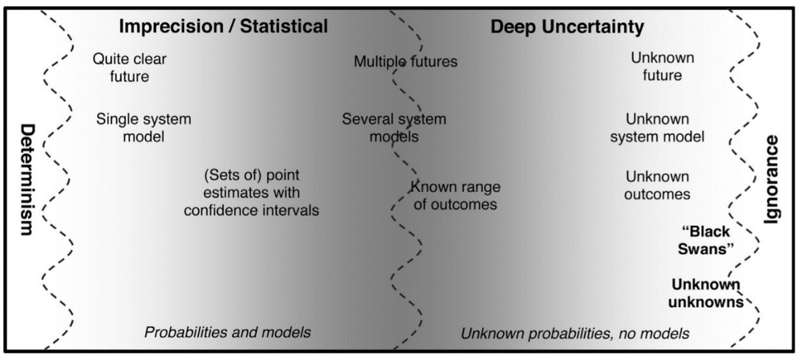
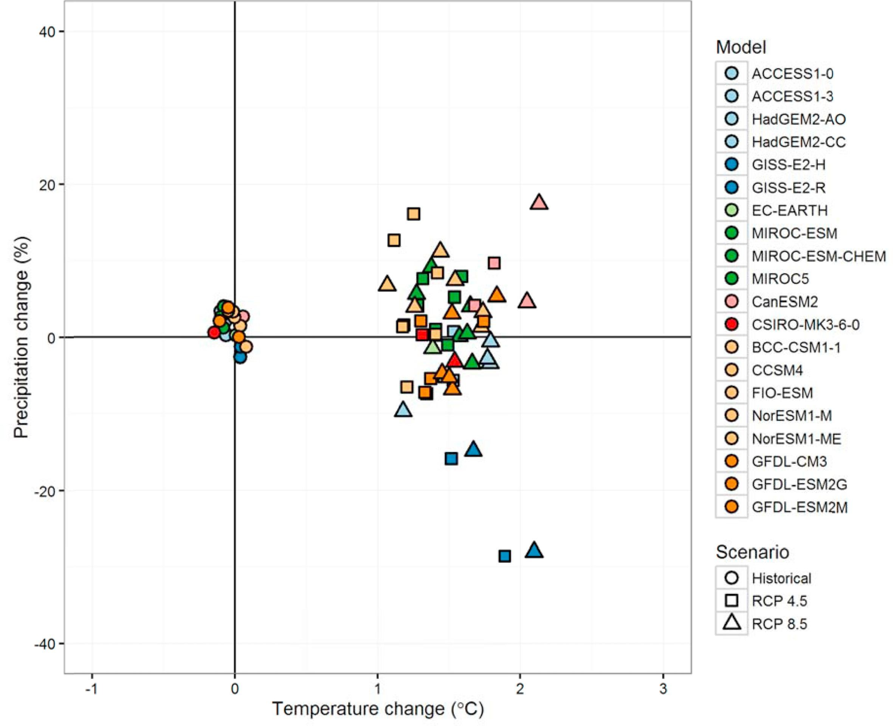
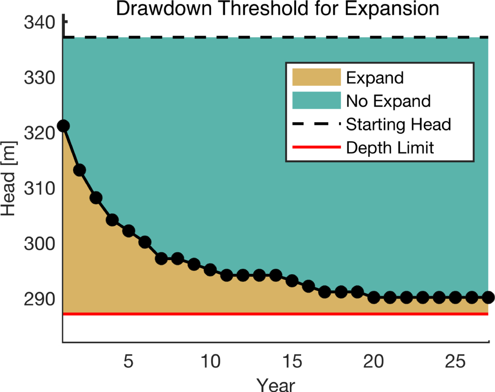

In this mini-lecture we will introduce some key concepts of decision analysis focused mainly on uncertainty. We will introduce multi-criteria decision analysis (MCDA) as a classic method for making decisions and the concepts of robustness and flexibility.
One of the bases of decision theory is the concept of expected utility as formulated by (Savage 1954). In this theory, one can formulate a personal utility function, which is a function about how one values different aspects, and is by nature, subjective. One can also formulate a probability distribution of the potential outcomes of a certain decision. In this way, one can optimise the expected value of the utility function under the probability distribution of outcomes and obtain the best decision. While this approach is considered rational for normal decisions, sometimes it’s not applicable to infrastructure decision-making. First of all, given the variety of stakeholders and objectives, it’s not easy to compute a single expected utility function. Secondly, infrastructure decisions don’t only focus on optimising benefits, but also on reducing losses from worst-case scenarios. An infrastructure that performs well on average but loses functionality for an entire year is normally not considered acceptable. This is commonly known as the “Flaw of Averages” and occurs when the analysis is carried out for a “most likely” scenario or using a “best prediction” instead of using a deeper uncertainty evaluation.
The concepts elaborated in this mini-lecture will therefore tackle the challenges of making decisions under uncertainty using a participatory and adaptive approach.
Long-term planning is particularly difficult due to the inherent uncertainty about the future. Figure 7.2.1 shows the range of uncertainty types that can be present in a problem. The left side describes the classical predict-then-act approach, starting with determinism, in which all the factors involved are known; and the statistical risk, in which the imprecision could be quantified by probabilities. However, long-term strategies, due to unpredictable new technologies, changing trends in demography and societal behaviours, and climate change effects, usually fall under the right side, characterised by deep uncertainty.

Figure 7.2.1: Different types of uncertainty (Buurman and Babovic 2016)
When we face uncertainty, the premise that we should decide to follow our best predictions, as in the statistical approach, has been questioned for a while (Gärdenfors and Sahlin 1982). Usually, our problems face deep uncertainty which stems from cases where knowledge is diffuse, the experts do not agree, or the number of assumptions made through the estimation process makes the results doubtful. This issue has produced important literature on Decision Making under Deep Uncertainty (DMDU) methods and applications, as will be seen in mini-lecture 7.3.
A decision-making process evaluates a set of alternatives by using different criteria, including attributes and objectives. Attributes are the measurable properties of the model such as the cost, capacity and emissions of specific infrastructure options or strategies, as well as related or dependent characteristics such as the location or lifetime. Objectives are understood as statements about the desired state of the system (Malczewski and Rinner 2015) or defined as visions or goals, as outlined in Lecture 5.
For the decision-making process, an “a priori” approach uses a set of relative weights to build an objective function for optimisation (Drobne and Lisec 2009). For instance, a decision-maker can say that reducing emissions has a 50% importance (weight), while cost and reliability have 30% and 20% importance, respectively. In contrast, an “a posteriori” approach does not need to provide relative weights beforehand, it tries to explore the whole set of alternatives and evaluate the trade-offs between different and conflicting objectives (Malczewski 1999). For instance, an energy plan can have low cost and high emissions by continuing to use fossil fuels, or high cost and low emissions by changing to renewables. With an “a posteriori” approach, the decision-maker does not need to decide how much they prefer to reduce emissions or costs by, instead they can look at the whole set of options, evaluate the trade-offs and potentially make a compromised decision. The set of optimal solutions is commonly referred to as a Pareto Frontier (Cohon 1978).
There are several methods used in the industry that use MCDA approaches, such as the Analytic Hierarchy Process (AHP) ELECTRE or PROMETHEE.
Robustness is the concept of making decisions in the present that will also achieve objectives in the future. In this sense, decision-makers do not try to generate the maximum value by looking at the most likely projection of the future. Instead, they try to explore a broad range of future scenarios and select the strategy that performs best in most of them. There are several possible performance indicators to look at. The two most commonly used are: (1) robustness, or selecting the strategy that performs best in most futures, or (2) regrets, minimising the potential losses under all potential futures.
Figure 7.2.2 shows different projections of precipitation and temperature changes for a hydropower project from different climate models. The range of values evident is between +20% to -30%, resulting in a huge challenge for the project design. Given the non-flexible nature of a hydropower dam, in this case, a robust decision that minimises possible regrets is critical.

Figure 7.2.2: Projected mean changes in annual temperature (°C) and precipitation (%) for a hydropower project (Taner, Ray, and Brown 2017)
In contrast with the concept of robustness, flexibility takes a sequential decision-making approach. This means, flexibility does not try to make only the best decisions in the present, but intends to also provide options so the system can adapt through time. Adaptive management was originally developed for the management of natural resources under uncertainty as “an integrated, multidisciplinary and systematic approach to improving management and accommodating change by learning from the outcomes” (Holling 1978). Hence, the value of flexibility – the capability to adapt over time – is a well-known concept developed in recent techniques for making decisions under uncertainty.
Flexibility is an important advantage for two main reasons:
Figure 7.2.3 shows an analysis in which the decision to expand or not to expand a reservoir dam depends on a variable threshold through time. If the threshold is likely to be reached, the decision-maker may consider the expansion of the reservoir dam to accommodate for future demands and, therefore, design it with flexibility. If expanding the dam is difficult, another option might be to prepare small desalination or treatment plants where needed, increasing the flexibility of the water supply system.

Figure 7.2.3: Drawdown threshold for the decision to expand or not in a reservoir dam (Fletcher et al. 2019)
In this mini-lecture we introduced the Flaw of Averages to illustrate the mistake of making decisions based on average performance. Then we explored the types of uncertainty that exist in different problems and some concepts of multi-criteria decision analysis (MCDA). Finally, we described the concepts of robustness and flexibility and their importance for infrastructure planning.